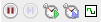
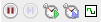

Les barres d'outils
Logisim-evolution dispose de plusieurs barres d'outils. La barre d'outils principale est configurable et met à disposition un accès rapide aux outils les plus utilisés. Ceux-ci restent toujours disponibles dans le panneau de navigation.
Une seconde barre d'outils pilote l'affichage du panneau de navigation et de la zone de dessins.

Et enfin deux autres barres apparaissent selon l'état du panneau de navigation. Elles sont présentées ci-dessous.
 
La barre d'outils principale
Cette barre d'outils est personnalisable à l'aide du menu → onglet La configuration est en présentée par la page sur les options de projet. Ci-dessous nous présentons brièvement les outils présents par défaut dans la barre. Il existe beaucoup d'autres composant pour construire des circuits. Vous trouverez beaucoup plus d'information sur l'ensemble des outils dans la Référence de la bibliothèque.
 Outil Pousser : Cet outil permet d'interagir avec les composants de simulation. Par exemple si vous
Outil Pousser : Cet outil permet d'interagir avec les composants de simulation. Par exemple si vous poussez
sur une connexion du circuit celle-ci basculera d'un état à l'autre ou si vouspoussez
sur un câble vous pourrez connaitre la valeur des signaux transportés. Plus d'information sur le lien pousser de la librairiebase
. L'outil Sélection : Cet outil est particulièrement utile au moment de la conception des circuits, il permet de poser,déplacer ou sélectionner les éléments. Il sert aussi à câbler le circuit. Plus d'information sur le lien sélect de la librairie
L'outil Sélection : Cet outil est particulièrement utile au moment de la conception des circuits, il permet de poser,déplacer ou sélectionner les éléments. Il sert aussi à câbler le circuit. Plus d'information sur le lien sélect de la librairie base
. Outil Text : Cet outil permet de placer du text sur les dessins et de modifier les labels des composants.Plus d'information sur le lien test de la librairie
Outil Text : Cet outil permet de placer du text sur les dessins et de modifier les labels des composants.Plus d'information sur le lien test de la librairie base
.
 Outil Pin : Cet outil permet de placer des connexions le schéma. Les connexions sont de deux types : entrée ou sortie.Plus d'information sur le lien de la Pin de la librairie
Outil Pin : Cet outil permet de placer des connexions le schéma. Les connexions sont de deux types : entrée ou sortie.Plus d'information sur le lien de la Pin de la librairie base
.

 Outils Not,And,Or : Ces outils permettent de placer les portes logiques de base sur le dessin. Le document sur les libraires les présente.
Outils Not,And,Or : Ces outils permettent de placer les portes logiques de base sur le dessin. Le document sur les libraires les présente.
La barre d'outils auxiliaire
Cette barre a quatre boutons les deux premiers concernent le mode de présentation dans le panneau de navigation et les deux autres concernent la présentation du projet.
 Afficher la barre d'outils Dans le mode édition, affiche les librairies et les outils dans le panneau de navigation.
Afficher la barre d'outils Dans le mode édition, affiche les librairies et les outils dans le panneau de navigation. Afficher l'arborescence de simulation Affiche la hiérarchie des différents circuits actifs dans une simulation.
Afficher l'arborescence de simulation Affiche la hiérarchie des différents circuits actifs dans une simulation. Vue éditer le dessin du Circuit Modifie la vue du canevas dans le mode schéma ce qui permet de créer nos circuits.
Vue éditer le dessin du Circuit Modifie la vue du canevas dans le mode schéma ce qui permet de créer nos circuits. Vue éditer l'apparence du circuit Modifie la vue canevas dans le mode dessins du symbole du circuit.
Vue éditer l'apparence du circuit Modifie la vue canevas dans le mode dessins du symbole du circuit.
La barre d'outils du panneau de navigation
Cette zone de barre d'outils affiche deux barres selon l'état du programme. La première a quatre boutons et est affichée quand le programme est dans le mode édition,dessin. Ce sont des raccourcis de certain des sous-menu du menu .
 Ajouter un circuit Ajoute un nouveau crcuit à nos projets.
Ajouter un circuit Ajoute un nouveau crcuit à nos projets.  Monte le circuit dans la hiérarchie du projet.
Monte le circuit dans la hiérarchie du projet. Descends le circuit dans la hiérarchie du projet.
Descends le circuit dans la hiérarchie du projet. Supprime un circuit dans la hiérarchie du projet.
Supprime un circuit dans la hiérarchie du projet.
Enclancher/déclencher la simulation.
 Simulation pas-à-pas Avancer d'un pas dans la simulation.
Simulation pas-à-pas Avancer d'un pas dans la simulation.  Activer/désactiver tic Actives ou désactive le fonctionnement des horloges.
Activer/désactiver tic Actives ou désactive le fonctionnement des horloges. Un seul ticAvance les horloges d'un tic.
Un seul ticAvance les horloges d'un tic.  'Clk' un pas Avance la simulation d'un cycle de l'horloge 'clk'.
'Clk' un pas Avance la simulation d'un cycle de l'horloge 'clk'.
Vous trouverez plus d'information dans la page sur le menu simulation
Suite: La table des attributs.